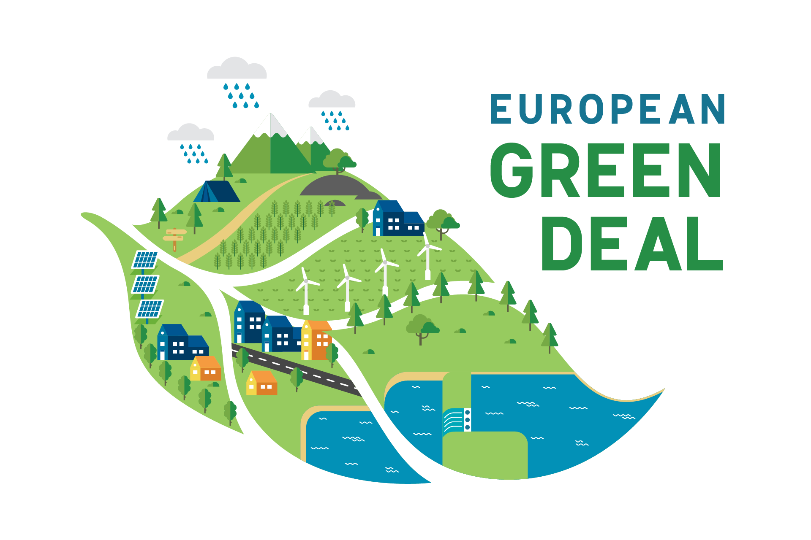

Questa è la seconda pagina del sito.
In questa pagina parleremo del Green Deal che è un argomento molto importante da sapere.
Il Patto verde europeo(o Green Deal europeo) è un insieme di iniziative politiche proposte dalla Commissione europea
con l'obiettivo generale di raggiungere la neutralità climatica in Europa entro il 2050.
Sarà inoltre presentato un piano di valutazione d'impatto per innalzare ad almeno il 50% l'obiettivo di riduzione delle emissioni di gas a effetto serra dell'Unione europea entro il 2030 e verso il 55% rispetto ai livelli del 1990.
L'intenzione è quella di rivedere ogni legge vigente in materia di clima e di introdurre nuove leggi sull'economia circolare, sulla ristrutturazione degli edifici, sulla biodiversità, sull'agricoltura e sull'innovazione.
Nel 2019 la presidente della Commissione europea Ursula von der Leyen ha dichiarato che il patto verde europeo sarà per l'Europa "come lo sbarco dell'uomo sulla Luna",
poiché questo patto renderebbe l'Europa il primo continente ad aver raggiunto la neutralità climatica.
Frans Timmermans è stato nominato da Von der Leyen vicepresidente esecutivo della Commissione europea per il patto verde europeo.
Il 13 dicembre 2019, il Consiglio europeo ha deciso di mandare avanti il piano con una clausola di non partecipazione per la Polonia.
Il 15 gennaio 2020 anche il Parlamento europeo ha votato a favore dell'accordo, con la richiesta di obiettivi più ambiziosi.
